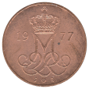
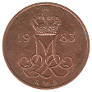

Five Øre
Christian IX (1874-1906)
Frederik VIII (1907-1912)
Christian X (1913-1923)
Christian X (1927-1940)
1928-❤ N·GJ
Christian X (1941-1947)
 1941-❤ N·S
1941-❤ N·S
1943-❤ N·S
1944-❤ N·S
Frederik IX (1950-1964)
1952-❤ N·S
1953-❤ N·S
 1957-❤ C·S
1957-❤ C·S
1958-❤ C·S
1959-❤ C·S
1962-❤ C·S
Frederik IX (1960-1972)
1963-❤ C·S
1964-❤ C·S
1965-❤ C·S
 1966-❤ C·S
1966-❤ C·S
 1967-❤ C·S
1967-❤ C·S
1968-❤ C·S
1969-❤ C·S
1970-❤ C·S
Margrethe II (1973-1988)
1973-❤ S·B
1974-❤ S·B
1976-❤ S·B
 1977-❤ S·B
 1978-❤ S·B
1978-❤ S·B
1979-❤ B·B
1980-❤ B·B
1981-❤ B·B
 1983-❤ R·B
1984-❤ R·B
1985-❤ R·B
1986-❤ R·B
1988-❤ R·B
Back to Denmark
Back to Home